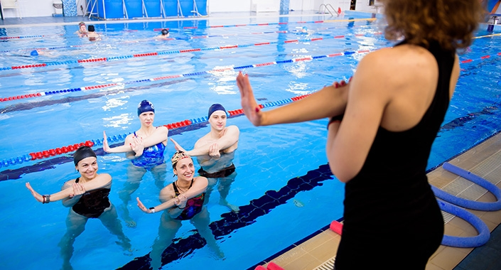
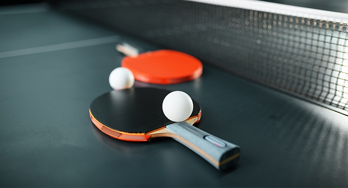
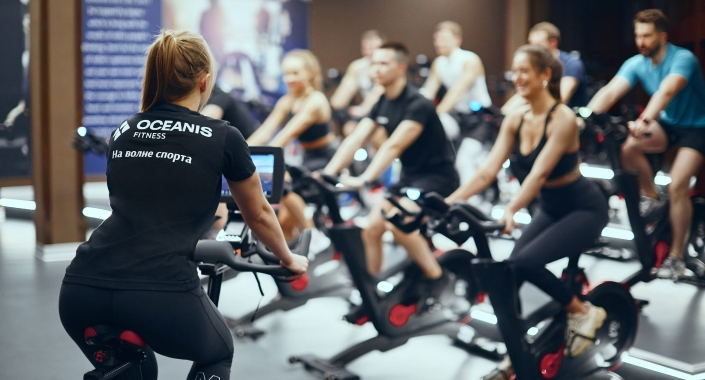

Наши тренировки

SPEED WATER
SPEED WATER - тренировка высокой интенсивности без оборудования. С красивыми комбинациями упражнений, где тренируется не только тело но и память.

ТЕННИС ИНТЕНСИВ
ТЕННИС ИНТЕНСИВ - тренировка по теннису в малой группе. Максимальное количество мест для записи - 6. При записи 2 человек, стоимость - 1000₽. При записи от 3 человек, стоимость - 600₽. Если записан 1 человек, то тренировка не проводится.

CYCLE
CYCLE - интенсивная тренировка на сайкл тренажерах под современную музыку в сайкл-студии с хореографическими элементами стоя и сидя. Вас ждут незабываемые ощущения с видео-сопровождением!